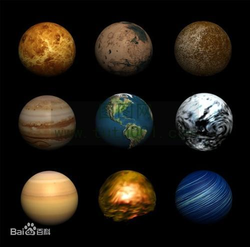

imageAndMultimedia tag includes:
tag:map and tag:area is always together.Here are examples.
you cound click one of them.And it jump to another html file.
the tag:area is cordinate in tag:map.

map attribute:name is linked to
1、距形：(左上角顶点坐标为(x1,y1)，右下角顶点坐标为(x2,y2))
<area shape="rect" coords="x1,y1,x2,y2" href=url>
2、圆形：(圆心坐标为(X1,y1)，半径为r) <area shape="circle" coords="x1,x2,r" href="url" alt="">
3、多边形：(各顶点坐标依次为(x1,y1)、(x2,y2)、(x3,y3) ......) <area shape="poly" coords=x1,y1,x2,y2"" href="url" alt="">